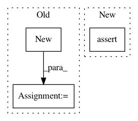

7b205efea6b504de04311bc55d109cd28d8f3e0c,OpenNMT/preprocess.py,,hasFeatures,#Any#,37
Before Change
opt = parser.parse_args()
def hasFeatures(filename):
reader = onmt.utils.FileReader.new(filename)
_, _, numFeatures = onmt.utils.Features.extract(reader.next())
reader.close()
return numFeatures > 0
After Change
def hasFeatures(filename):
with open(filename) as f:
print(f.readline())
assert(False)
_, features = onmt.utils.Features.extract(f.readline())
return len(features) > 0
In pattern: SUPERPATTERN
Frequency: 4
Non-data size: 3
Instances
Project Name: pytorch/examples
Commit Name: 7b205efea6b504de04311bc55d109cd28d8f3e0c
Time: 2016-12-21
Author: alerer@fb.com
File Name: OpenNMT/preprocess.py
Class Name:
Method Name: hasFeatures
Project Name: NVIDIA/flownet2-pytorch
Commit Name: dafdc9b5cb8fa4c65285aad22b1429549d06d71a
Time: 2018-02-04
Author: chenkaidev@gmail.com
File Name: networks/resample2d_package/functions/resample2d.py
Class Name: Resample2dFunction
Method Name: backward
Project Name: jwyang/faster-rcnn.pytorch
Commit Name: 7929d68e8d79bae487858fef93e81d28aa708d40
Time: 2017-12-20
Author: jyang375@t1000.cc.gatech.edu
File Name: lib/model/roi_crop/functions/roi_crop.py
Class Name: RoICropFunction
Method Name: forward